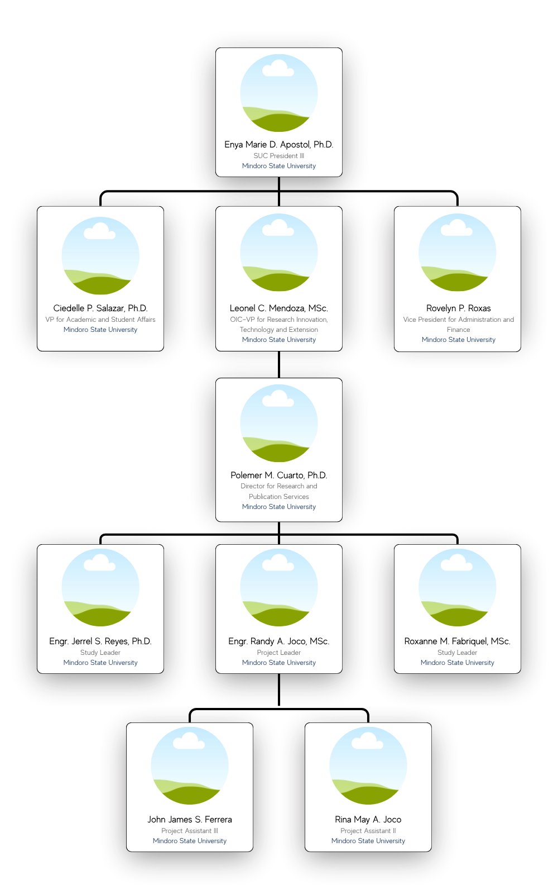

FarmIQ Team & Organization
Meet the dedicated team behind the FarmIQ project
Organizational Structure

Team Composition
Engr. Randy A. Joco, MSc.
Project Leader
Leading the FarmIQ project development and implementation.
Project LeadershipEngr. Jerrel S. Reyes, Ph.D.
Study Leader
Overseeing research and development activities
Project LeadershipRoxanne M. Fabriquel, MSc.
Study Leader
Leading specialized study components of the project
Project LeadershipJohn James S. Ferrera
Project Assistant III
Assisting in project coordination and IT system development.
Project Assistant | IT Expert
Rina May A. Joco
Project Assistant II
Assisting with project documentation and logistics
Project AssistantEngr. Randy A. Joco, MSc.
Project Leader
Leading the FarmIQ project development and implementation.
Project LeadershipEngr. Jerrel S. Reyes, Ph.D.
Study Leader
Overseeing research and development activities
Project LeadershipRoxanne M. Fabriquel, MSc.
Study Leader
Leading specialized study components of the project
Project Leadership
John James S. Ferrera
Project Assistant III
Assisting in project coordination and IT system development.
Project Assistant | IT Expert
Rina May A. Joco
Project Assistant II
Assisting with project documentation and logistics
Project Assistant